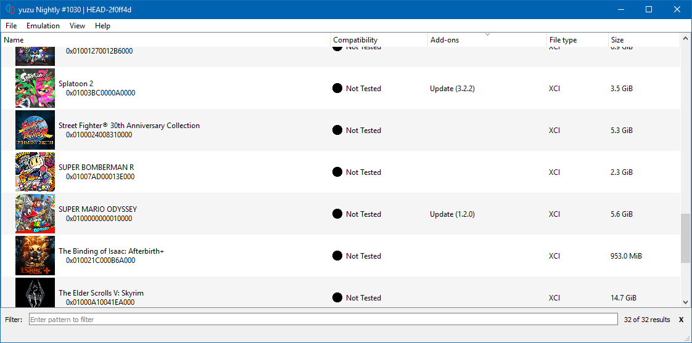

It’s only been over a month since our last report, and we have made so much progress already that we simply can’t wait to share it with you guys.
Without further ado, let’s dive in.

Super Mario Odyssey (Title screen)
CPU / Core
On the CPU emulation front, MerryMage and Lioncash have been absolutely phenomenal.
They have implemented a lot of missing ARMv8 instructions to Dynarmic, our ARM recompiler, and also fixed many bugs in the existing ones.
Because of this, the number of times yuzu has to fallback to Unicorn has been reduced and has improved the overall performance of yuzu.
ARMS
Thanks to Hedges, the previously Unicorn-only GDBStub now works with Dynarmic as well.
GDBStub is a debugging tool which helps the developers find errors/bugs in the code.
Subv fixed a bug in dynarmic which was causing issues with CPU state management, by preventing writing data to a register.
General Improvements
Octopath Traveller
As both Citra and yuzu share common code, FearlessTobi ported over various changes made in Citra to yuzu.
Here are some of the things he ported:
- Logging the yuzu version - to help us identify yuzu version from log file.
- Added “Continue/Pause” & “Toggle Speed limit” hotkeys.
- Updated Dark theme to latest version.
- Added “Build-date” info to the “About” dialog.
- Fixes for Travis CI environment.
- Added Game Compatibility List to yuzu.
- Many more code optimizations and minor bug fixes.
DarkLordZach implemented the display of game-title in the window title bar.
CaptV0rt3x ported over the display of version number in the title bar.
Puyo Puyo TETRIS
OS
Lioncash fixed a potential data race condition in the kernel object, by ensuring that the class handles its reference counts atomically.
A race condition, is an undesirable situation that occurs when a device or system attempts to perform two or more operations at the same time, but because of the nature of the device or system, the operations must be done in the proper sequence to be done correctly.
Bayonetta
The atomicity ensures that the change to the reference count is visible to all threads between operations and thus ensuring a race never happens.
And since that object class is inherited by all of the kernel objects in yuzu, this pretty much affected every kernel object.
Apart from this, he also optimized the code in the kernel scheduler and thread queue list.
The Binding of Issac
GPU
degasus, who was responsible for the stream buffer implementation in Citra, replaced the existing stream buffer in yuzu with Citra’s.
For the uninitiated, stream buffers are used for uploading vertex data to the GPU.
He has also been doing quite a lot of GPU code profiling and making optimizations.
Because of this, we are getting to the point where GPU emulation is not much of a bottleneck anymore.
In addition,he’s implemented a buffer cache, to avoid redundant uploads, and a VAO (Vertex Array Object) cache, to cache VAO objects.
Buffer cache works by caching the uploaded buffers within the stream_buffer and just reusing the old pointers.
VAO cache works by caching VAO objects instead of re-emitting all pointers per draw call.
Disgaea 5
bunnei, Subv, ogniK, and greggameplayer have implemented many missing texture formats, pixel formats, and render targets.
These implementations allowed us to proceed further in a lot of games like One Piece, Fate Extella, Go Vacation, and Xenoblade.
Subv also implemented a few depth buffer formats and added support for depth buffer testing.
Depth buffers are used for specifying the depth of each pixel, thereby creating various visual effects.
bunnei implemented a couple of vertex attributes, added more texture wrap modes, implemented shader instructions like TLDS & SEL, fixed TEXS shader instruction, implemented TEXS masks, and fixed texture unswizzle.
He also made various improvements to the rasterizer cache and improved its performance by avoiding superfluous copies.
This fixed rendering issues in Cave Story+, Disgaea 5, and Binding of Issac.
ogniK fixed glVertexAttribFormat for integers - which fixed exploding vertices in One Piece Unlimited World.
Lioncash refactored, cleaned and made improvements / optimizations to the GPU code.
DOOM
Fire Emblem - Warriors
Service HLE
With the latest documentation available on Switchbrew, we have made various bug fixes to our service implementations and also added new services as well.
Lioncash, mailwl, and Hexagon12 worked on stubbing the HID (Human Interface Devices) service and also made a few improvements there as well.
The HID service basically manages the controllers.
It stores all sorts of information related to controllers in a shared memory region, which we read from.
ogniK and bunnei fixed the Friend service, which fixed a crash in Splatoon 2 and also got Retro City Rampage booting.
Has-Been Heroes
The Friend service is mainly for your Nintendo Online friends, your friend list etc.
In this current implementation, we are always offline and we send the same response (offline) to the system and games as well.
The crash in Splatoon 2 was fixed because it was requesting the friend list and we returned a response of Zero (0) Friends to it.
It is not exactly an accurate replication of Switch’s behavior, but games seem to accept that response.
Similarly, we got Retro City Rampage booting because it was trying to get the User’s Presence and we added a stub in place of it.
mailwl added more stubs for the Account service.
Lastly, the Account service is mainly for management of your local account or registered users on the system.
Fantasy Hero
Each user has an unique UUID (Universally Unique Identifier), which is generated when an account is made, and they each have some information about their profile.
This info is typically referenced when saving games.
ogniK worked on the necessary foundation to support multiple user accounts and their management, in the future.
He also implemented functions to allow setting the username and locale of the Switch.
Hyrule Warriors
ogniK also implemented support for loading shared fonts in the pl:u service.
As we now support loading system bfttf fonts, users who have installed their system nand dumps to yuzu will automatically get shared fonts.
For other users, you can now load shared fonts from ttf files as well.
Fearlesstobi, by taking inspiration from Citra’s implementation, integrated open-source shared fonts into yuzu.
This can clearly be observed in above screenshots from the game - Hyrule Warriors.
The fonts need to be named as follows:
- FontStandard.ttf
- FontChineseSimplified.ttf
- FontExtendedChineseSimplified.ttf
- FontChineseTraditional.ttf
- FontKorean.ttf
- FontNintendoExtended.ttf
- FontNintendoExtended2.ttf
Lioncash implemented the skeletons for various new services like time:a, es, pm, erpt, eupld, ldr, and many more.
File System
DarkLordZach added support for various features like loading encrypted NCA files and XCI files, displaying game icons, parsing metadata, and made error handling more descriptive.
Encrypted NCA files are just game files in a container.
XCI files are basically raw gamecard dumps. Gamecards have 3 major partitions.
An Update Partition - which stores system updates, a Secure Partition - which has the game NCAs, and a Normal Partition - which just stores miscellaneous files.
What we want is the Secure Partition. It contains the game NCAs and other metadata as well, which is very useful.
XCI files are relatively easy to dump compared to other methods and are very useful.

Gamelist showing games and updates
By adding support for loading NCAs and XCIs, it removes a lot of unnecessary steps when you dump your games.
Before, you had to dump your XCI, then extract the Secure partition, and then extract the NCA into the format for yuzu.
This left you with nearly 8 different files, which are binaries and a romfs file.
Now with this feature, you can directly open your NCA files or, better yet, your XCI files.
And because XCI files come with additional metadata, you can also get game icons from them.
The icons can be configured to display at various sizes within yuzu.
DarkLordZach went a step ahead and implemented support for NAX (Nintendo AesXts) archives.
With this, you can load your games from your Switch’s SD card directly by connecting it to your PC.
He also fixed a few issues with our earlier VFS implementation and made further improvements to it as well.
Runner 3
He also added support for the NSP (Nintendo Submissions Package) file format, BKTR format, and added an option to set custom NAND/SD directories.
As NSP support will likely become the new format of choice for advanced dumper homebrew and other tools, adding support means less steps while dumping.
NSPs contain all the metadata and can contain game updates / DLCs as well.
With added support for BKTR format, you can now install game updates from yuzu NAND or SD directly via the UI.
He and Lioncash also worked on refactoring the File System code and made optimizations wherever possible.
Keep in mind that, all types of files will still need their decryption keys.
Audio
As yuzu was progressing at an incredibly fast pace, one of the most sought out features was audio output.
We discussed this in our earlier report that the Switch has 2 methods of audio output AudRen and AudOut.
First, bunnei emulated AudOut without actually producing audio output.
This was used for only a handful of games like One Piece, Snipperclips, Minecraft etc.
Emulating AudOut state without actually outputting audio was sufficient to get these games to go into actual game play.
This was because games often wait for signaling to indicate that an audio clip has finished playing.
We can properly signal this state without actually playing the sound, allowing these games to continue running.
Later he added audio output, based on cubeb, for games that used the AudOut service.
Human Fall Flat
ogniK did the reverse engineering and helped with the HLE (High Level Emulation) implementations of Audout and AudRen services.
He also added opus library and implemented hwopus service functions, which uses AudOut and AudRen, which fixed Pokemon Quest and Touhou.
Since we didn’t have AudRen yet, it only worked with games using AudOut.
It took a while but bunnei finally implemented the Audren method, which got audio output for most games like Cave Story+, Binding of Issac, Super Mario Odyssey, Puyo Puyo Tetris and many more.
bunnei’s original implementation of audio output, with cubeb backend, only supported two-channel 48000Hz - which is the most common audio output format.
This works well for AudOut games, but games that use AudRen could use variable sample rates.
Because we were always playing all sounds at 48000Hz, even though it was working properly, the sounds would be audible but would often sound sped-up or with incorrect pitch.
One Piece Unlimted World
MerryMage fixed this problem by implementing audio interpolation and filtering, which allowed us to resample these sounds from their original sample rate to 48000Hz.
Audio Interpolation is a method of making digital audio sound better than it actually is and filtering helps reduce artifacts that arise when resampling the audio.
She also found and fixed threading issues with the cubeb backend.
Lioncash did lots of refactoring and made multiple improvements / optimizations to Audio code.
Super Mario Odyssey
As it turns out, Super Mario Odyssey (SMO) has actually been capable of going in-game for quite a while.
However, due to really bad performance and some occasional emulator crashes, no one was really testing it.
bunnei made a major breakthrough by using save games (dumped from a Switch Console) which enabled him to get in game much quicker, fix crashes, and improve rendering.
By being able to expedite this process, the team was quickly able to get the first 3D rendering working in SMO - Mario’s head in the title screen.
From there, we were able to get in-game rendering working, although with very glitchy graphics and lots of variation depending on the kingdom.
Super Mario Odyssey (In-game)
bunnei and khang06 implemented various render targets and texture formats necessary to get it booting.
bunnei implemented the XMAD shader instruction, improved handling of the KIL shader instruction, improved handling of unknown vertex attributes in shaders, added more accurate floats for shaders, fixed the constbuffer size, added a few vertex attribute types, and stubbed the AM HLE service functions.
Subv implemented the SSY and SYNC shader instructions, implemented alternative blending factors, and improved handling of invalid or unset vertex attributes.
SSY and SYNC are instructions for control flow in the shaders.
SSY tells the shader execution unit where to jump when a SYNC is executed.
Super Mario Odyssey (In-game)
Currently SMO goes in game and the menus are running at full speed.
However, in-game speeds can vary based on what’s in view and your PC’s hardware specifications.
It is very glitchy, but you can play it.
Audio output works well when at full speed. Using a save game helps a lot.
There are random softlocks when transitioning to new areas; therefore, a play-through is not possible.
Breath of the Wild
The Legend of Zelda: Breath of the Wild, is a particularly interesting and exciting game to emulate in yuzu.
While you can already play this game on cemu using Wii U emulation, we think its important to also have an open source alternative.
Furthermore, BotW is a very graphically complicated game to emulate, so it’s exciting to use it as an opportunity to improve our rendering.
The Legend of Zelda: Breath of the Wild
Random crashing was one of the main issues we faced while trying to get this game working.
Upon debugging, we found out that there were a few issues with threading in the kernel.
For example, there were a bunch of race conditions when running in multi-core mode, our core timing was inaccurate for multiple cores, and there was a chance of threads being duplicated.
Subv fixed these issues by removing most of the race conditions, using approximated amount of ticks when advancing core timing, and added more validation asserts to make sure the threads weren’t being duplicated.
Before the changes, the four cores incremented the global ticks counter independently, which caused it to be approximately 4 times more than what it should have been.
The Legend of Zelda: Breath of the Wild
This made games think that the timing was malfunctioning.
The reason for this was that the ticks counter was not thread-safe and we were incrementing it more than we should have.
This was fixed by amortizing the tick increases by dividing each increment by the number of cores (4).
This is not entirely accurate, as not all cores are active all the time, but it should be better than before.
bunnei implemented a few necessary render targets, texture formats, vertex attribute types, and some primitive topologies.
Currently, BotW goes in-game but has massively broken graphics.
The map, items, 3D models of Divine Beasts, and Hyrule Castle are properly displayed though.
Conclusion
Finally, we would like to thank all of our valuable contributors who have worked hard to improve yuzu.
yuzu needs contributors like them to become the best it can be.
We would also love to thank our generous patrons for supporting our efforts in this project.
Kamiko
Soldam

Mario Tennis Aces
All these screenshots have been taken in handheld mode of yuzu, using a PC with the following specs:
- CPU - Intel i3 6100
- GPU - Nvidia GTX 750ti
- RAM - 12 GB DDR3
Please consider supporting us on Patreon!
If you would like to contribute to this project, checkout our GitHub!


{kind=link}
{kind=link}
{kind=link}
{kind=link}
{kind=link}
{kind=link}
{kind=link}
{kind=link}
{kind=link}
{kind=link}
{kind=link}
{kind=link}
{kind=link}
{kind=link}
{kind=link}
{kind=link}
{kind=link}
{kind=link}
{kind=link}
{kind=link}
{kind=link}
{kind=link}
{kind=link}
{kind=link}
{kind=link}
{kind=link}
{kind=link}
{kind=link}
{kind=link}
{kind=link}
{kind=link}
{kind=link}
{kind=link}
{kind=link}
{kind=link}
{kind=link}
{kind=link}
{kind=link}
{kind=link}
{kind=link}
{kind=link}
{kind=link}
{kind=link}
{kind=link}
{kind=link}
{kind=link}
{kind=link}
{kind=link}
{kind=link}
{kind=link}
{kind=link}
{kind=link}
{kind=link}
{kind=link}